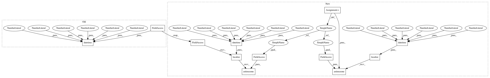

0a6ba144446d0ceee25de26366b4f6eb67516675,tests/components/binary_sensor/test_tod.py,TestBinarySensorTod,test_midnight_turnover_after_midnight_outside_period,#TestBinarySensorTod#,166
Before Change
state = self.hass.states.get("binary_sensor.night")
assert state.state == STATE_OFF
switchover_time = datetime(
2019, 1, 11, 4, 59, 0, tzinfo=self.hass.config.time_zone)
with patch("homeassistant.components.binary_sensor.tod.dt_util.utcnow",
return_value=switchover_time):
self.hass.bus.fire(ha.EVENT_TIME_CHANGED, {
After Change
def test_midnight_turnover_after_midnight_outside_period(self):
Test midnight turnover setting before midnight inside period .
test_time = self.hass.config.time_zone.localize(
datetime(2019, 1, 10, 20, 0, 0)).astimezone(pytz.UTC)
config = {
"binary_sensor": [
{
"platform": "tod",
"name": "Night",
"after": "22:00",
"before": "5:00"
}
]
}
with patch("homeassistant.components.binary_sensor.tod.dt_util.utcnow",
return_value=test_time):
setup_component(self.hass, "binary_sensor", config)
self.hass.block_till_done()
state = self.hass.states.get("binary_sensor.night")
assert state.state == STATE_OFF
switchover_time = self.hass.config.time_zone.localize(
datetime(2019, 1, 11, 4, 59, 0)).astimezone(pytz.UTC)
with patch("homeassistant.components.binary_sensor.tod.dt_util.utcnow",
return_value=switchover_time):
self.hass.bus.fire(ha.EVENT_TIME_CHANGED, {
In pattern: SUPERPATTERN
Frequency: 3
Non-data size: 12
Instances
Project Name: home-assistant/home-assistant
Commit Name: 0a6ba144446d0ceee25de26366b4f6eb67516675
Time: 2019-03-11
Author: kstaniek@gmail.com
File Name: tests/components/binary_sensor/test_tod.py
Class Name: TestBinarySensorTod
Method Name: test_midnight_turnover_after_midnight_outside_period
Project Name: home-assistant/home-assistant
Commit Name: 0a6ba144446d0ceee25de26366b4f6eb67516675
Time: 2019-03-11
Author: kstaniek@gmail.com
File Name: tests/components/binary_sensor/test_tod.py
Class Name: TestBinarySensorTod
Method Name: test_offset
Project Name: home-assistant/home-assistant
Commit Name: 1f3e4c5776d1d2b05b6f0934f1d7aa0b3bc729ef
Time: 2019-03-12
Author: kstaniek@gmail.com
File Name: tests/components/binary_sensor/test_tod.py
Class Name: TestBinarySensorTod
Method Name: test_offset
Project Name: home-assistant/home-assistant
Commit Name: 0a6ba144446d0ceee25de26366b4f6eb67516675
Time: 2019-03-11
Author: kstaniek@gmail.com
File Name: tests/components/binary_sensor/test_tod.py
Class Name: TestBinarySensorTod
Method Name: test_midnight_turnover_after_midnight_outside_period